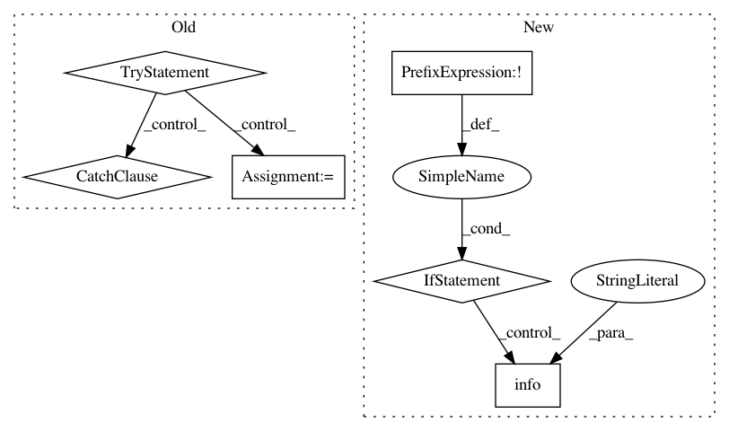

fd1456ac36e0a1ebfb800c9593f1540858ca7bea,src/python/pants/backend/core/tasks/reporting_server.py,KillServer,execute,#KillServer#,114
Before Change
for pidfile, pid, port in info:
with open(pidfile, "r") as infile:
pidstr = infile.read()
try:
os.unlink(pidfile)
pid = int(pidstr)
os.kill(pid, signal.SIGKILL)
print("Killed server with {pid} at http://localhost:{port}".format(pid=pid, port=port),
file=sys.stderr)
except (ValueError, OSError):
pass
After Change
def execute(self):
server = ReportingServerManager(self.context, self.get_options())
if not server.is_alive():
logger.info("No server found.")
return
pid = server.pid
try:
logger.info("Killing server with {pid} at http://localhost:{port}"
In pattern: SUPERPATTERN
Frequency: 3
Non-data size: 6
Instances
Project Name: pantsbuild/pants
Commit Name: fd1456ac36e0a1ebfb800c9593f1540858ca7bea
Time: 2015-07-17
Author: kwilson@twopensource.com
File Name: src/python/pants/backend/core/tasks/reporting_server.py
Class Name: KillServer
Method Name: execute
Project Name: polyaxon/polyaxon
Commit Name: 26d237186b852c342691aedfe81ac23851445f03
Time: 2018-06-07
Author: mouradmourafiq@gmail.com
File Name: polyaxon/scheduler/tasks/notebooks.py
Class Name:
Method Name: projects_notebook_start
Project Name: home-assistant/home-assistant
Commit Name: ab8c127a4a466f2c137239c0eb06c8143adea106
Time: 2018-11-18
Author: JeffLIrion@users.noreply.github.com
File Name: homeassistant/components/media_player/firetv.py
Class Name:
Method Name: setup_platform